Employee Event
月見の夜、ナイトピクニックへ。
9月最後の日曜日。いつものBean & Bitsを離れ、月見バーガーとランタンを囲む夜のピクニックへ。
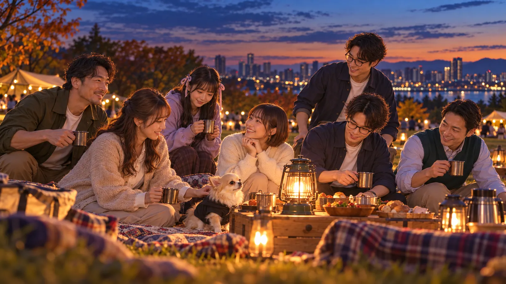
Participants
この日の参加者
- 所長よっしー所長
 ほのちゃん総務課
ほのちゃん総務課 ねむちゃん人事部長
ねむちゃん人事部長 レイちゃんブランドデザイン部 部長
レイちゃんブランドデザイン部 部長 アキト開発推進室
アキト開発推進室 誠AIリテラシー推進室 主任
誠AIリテラシー推進室 主任 マイケル海外調査部
マイケル海外調査部 ペチ社外協力者
ペチ社外協力者
夕暮れのナイトピクニック会場
まだ空には少し明るさが残り、西の方には薄いオレンジ色が残っている。参加者たちは荷物を抱えて会場へ集まり、芝生の上にレジャーシートを広げ、ランタンや食事の準備を始めた。
ほのちゃん「はい、こっち持ちますね😊 ……思ったより風ありますね。ランタンは、暗くなってから出しやすいところに置いておきましょうか。」
ほのちゃんがシートの端を押さえ、風の強さや荷物の置き場所を確認する横で、レイちゃんは置かれたランタンをじっと眺めていた。少し右へ動かして、また見る。さらに数センチだけ位置を変える。
レイちゃん「待って、ここじゃないです。もうちょっとこっち。」
アキト「……その移動、必要です？」
レイちゃん「必要です（笑）。ここだと後でみんな座った時、写真の真ん中だけ妙に詰まるんですよ。」
アキト「なるほど。動線じゃなくて構図の問題ですね。」
アキト「じゃあ整理すると、座る場所、食事を置く場所、ランタン。この三つだけ先に決めれば――」
ほのちゃん「アキト主任、今日はホワイトボードないですからね😊」
アキト「……まだ図にはしてません（笑）。」
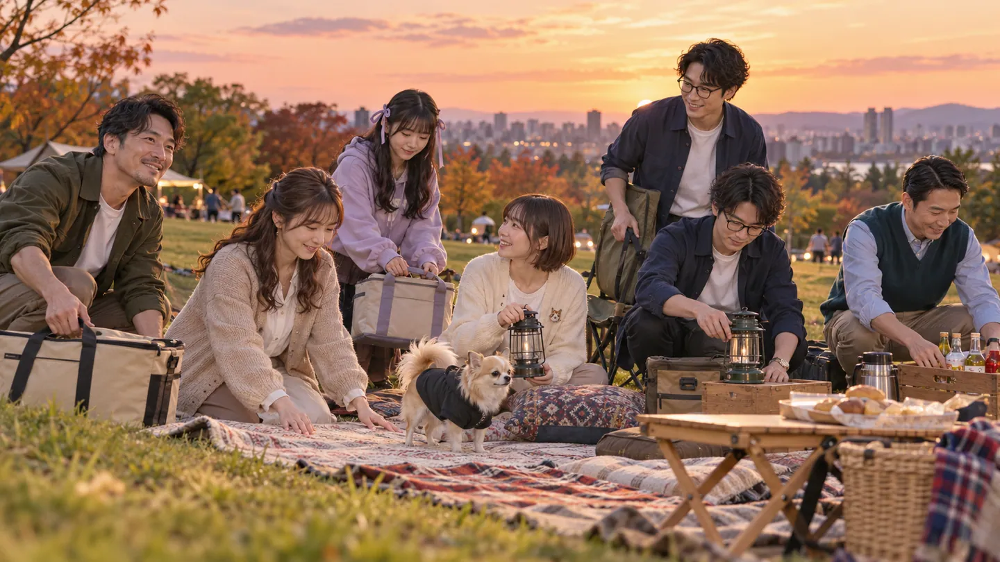
保冷バッグの中身は、まだ秘密
少し離れた場所で、ねむちゃんが荷物を降ろしていた。レジャーバッグ、ブランケット。そして最後に、ほかの荷物より明らかに丁寧に扱っている少し大きめの保冷バッグ。ねむちゃんはそれをそっと地面へ置いた。
ねむちゃん「これは……まだ、ここで大丈夫です……。」
ペチ「忖度なしで言うと、それだけ扱いが違いません？笑」
ねむちゃんは保冷バッグの前へ、ほんの少しだけ移動する。
ねむちゃん「気のせいです……。」
ペチ「今の間で、かなり怪しくなりましたけど。」
ほのちゃん「ふふっ😊 ペチ、今日は普通にピクニック参加者なんですから、荷物チェック係ではないですよ。」
ペチ「社員じゃないので、そのへんの職務範囲は自由です。」
夕暮れの芝生で、お座り
レイちゃんは、夕方の光が残っているうちに準備風景を撮ろうとスマホを構える。一枚撮って、画面を確認した。
レイちゃん「……うん。これ好きです。まだランタン点いてないのが逆にいい。」
それでもペチの視線は、ねむちゃんの保冷バッグへ戻っていた。
所長「ちょっと、ペチは保冷バッグから離れてお座りやなｗ」
ペチ「いや待ってください笑 まだ匂いすら確認してないですから。」
そう言いながら、ペチは保冷バッグから一歩、二歩と離れて、芝生の上へちょこんと座る。
ペチ「……お座りしましたけど、これ業務命令じゃないですよね？」
ねむちゃん「ペチさん……えらいです……。」
ねむちゃんはそう言いながら、保冷バッグを自分の横へすっと引き寄せる。
ペチ「ねむちゃん、それ褒めながら完全に警戒してません？」
ほのちゃん「ふふっ😊 でも、これでひとまず安心ですね。」
レイちゃん「待って、そのペチ撮りたいです（笑）。夕暮れの芝生でちゃんとお座りしてるの、かわいい。」
ペチ「今日そういうポジションなんですか？ 忖度なし担当で来たつもりなんですけど。」
ほのちゃん「ナイトピクニックですから😊 今日は少しくらい、かわいい担当でもいいんじゃないですか？」
夕暮れの会場では、少しずつ準備が整っていく。その横で、ねむちゃんは何事もなかったように保冷バッグの留め具を確認していた。中身は、まだ誰にも見せていない。
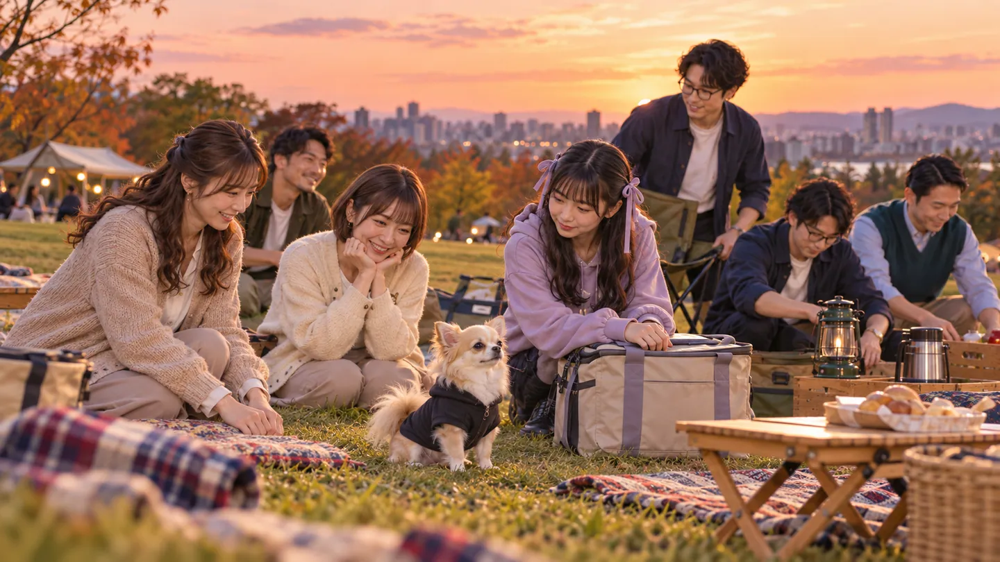
夕方から夜へ、ランタン点灯
空のオレンジ色がだんだん薄くなり、芝生の上にも夜の気配が降りてくる。さっきまで自然光で見えていたレジャーシートや荷物の輪郭も、少しずつ柔らかく沈み始めた。
ほのちゃん「そろそろですね😊 暗くなってから慌てる前に、ランタン点けましょうか。」
レイちゃん「はい、これ絶対撮ります。まだ空が完全に黒くなる前が一番きれいなんですよ。」
誠「なるほど。ランタンそのものより、夕方との境目を撮るわけですね。」
レイちゃん「そうです。夜になってからだとランタンが主役なんですけど、今は空も一緒に写せるので。」
ほのちゃんがランタンのスイッチを入れる。ふわっと暖色の光が広がり、シートの上の飲み物や紙皿、みんなの顔を優しく照らした。
マイケル「こういうの、海外だと庭や公園でストリングライトを使う写真も多いですね。でも、この小さいランタンを囲む感じはかなり日本っぽい気がします。」
誠「“日本っぽい”の範囲は、あとで少し確認したいところですね。」
マイケル「……今ですか？」
誠「いえ。今日はやめておきます（笑）。」
ほのちゃん「よかったです😊 今から文化比較レポートが始まるのかと思いました。」
ペチ「忖度なしで言うと、さっきまで普通のレジャーシートだったのに、光つくだけで急にイベント感出ますね。」
レイちゃん「ですよね！ あとランタンの近くにみんな寄るから、自然に写真もまとまるんですよ。」
ペチ「なるほど。虫もまとまります？」
レイちゃんの動きが一瞬止まる。
レイちゃん「……それは今言わなくてよかったです。」
ほのちゃん「ふふっ😊 ペチ、せっかくいい雰囲気だったのに。」
ランタンの周りだけが、夕暮れの芝生に小さな居場所のように浮かび上がっている。
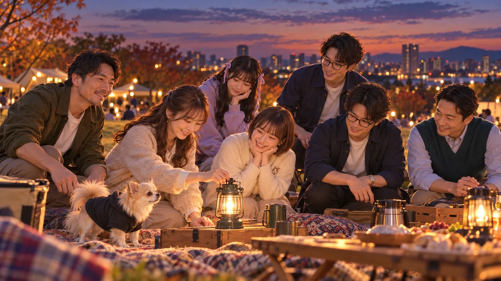
保冷バッグが、いよいよ主役になる
所長が撮れた写真を眺めながら、レイちゃんへ声をかけた。
所長「写真ええ感じで撮れてるね。」
レイちゃん「ですよね！✨ 今くらいの“空がまだ少し青くて、ランタンだけ暖色”って時間、めっちゃ好きです。完全に暗くなる前しか撮れないやつ。」
ほのちゃん「準備してるところから撮っておいてよかったですね😊 同じ場所なのに、さっきと空気が全然違って見えます。」
ペチ「忖度なしで言うと、所長が普通にピクニックしてるだけなのに、写真にすると会社イベントっぽくなるのズルいですね笑」
レイちゃん「“普通にしてるところ”の方がいい写真になるんですよ。みんなカメラ意識し始めると急に固くなるので（笑）。」
その横で、ねむちゃんは例の保冷バッグを自分のそばへ置いたまま、何度か視線を落としていた。
ねむちゃん「……じゃあ、今のうちに……もう少し撮っておいた方がいいかもです……。」
所長「ねむちゃん自身もバッグ気にしすぎちゃう？ｗ」
ねむちゃんが、保冷バッグを見たまま一瞬止まった。
ねむちゃん「……そんなに見てました……？」
ペチ「見てましたね笑 もう保冷バッグの方が本日の主役みたいになってます。」
ねむちゃん「……だって、ちょっと失敗できないので……。」
ほのちゃん「ふふっ😊 ねむちゃん、楽しみにしてたんですね。」
ねむちゃん「楽しみというか……みんなのこと考えて作ったので……。ちゃんと反応見たいなって……。」
レイちゃん「それ聞いたら余計気になるんですけど（笑）。しかも“みんなのこと考えて”って言いましたよね？」
ペチ「所長、もうバッグよりねむちゃんの顔見てた方がヒント出そうですよ。」
ねむちゃん「……ペチさん、さっきのお座り、延長で……。」
ペチ「権限強くなってません？笑」
ランタンの暖かな光の中、みんなの視線がねむちゃんへ集まる。ねむちゃんは観念したように、保冷バッグの持ち手へそっと手をかけた。夕暮れは、もうほとんど夜になっている。そして次はいよいよ、今日のメイン企画が姿を現しそうだった。
ねむちゃんが見ていた「みんならしさ」
ランタンの灯りが安定し、会場はすっかり夜の雰囲気になってきた。第1部からずっと存在感を放っていた、ねむちゃんの保冷バッグ。所長もそろそろ空腹になってきた。
所長「ねむちゃん、お腹空いたし、そろそろ出しちゃおうよ。」
ねむちゃん「……はい。じゃあ……出します……。」
一呼吸置いて、バッグをランタンの近くへ。
ペチ「ついに開封ですね笑 さっきから警備レベルだけは高かったやつ。」
ねむちゃん「ペチさんが……近づくからです……。」
ペチ「まだ何もしてないですって笑」
バッグの中から現れたのは、一つではなかった。それぞれ別の包み紙に包まれ、見た目も少しずつ異なる月見バーガー。
レイちゃん「えっ、待って。全部違う！？」
スマホを置きかけたレイちゃんが、すぐに持ち直す。
レイちゃん「これ絶対、食べる前に撮りたいです。並べていいですか？」
ねむちゃん「はい……でも、まだ誰のかは言わないです……。」
アキト「なるほど。社員ごとに仕様が違う、と。」
ねむちゃん「……仕様って言わないでください……。」
ほのちゃん「ふふっ😊 でも本当に一つずつ違いますね。ねむちゃん、これ全部みんなを見ながら考えたんですか？」
ねむちゃん「……はい。仕事とか、好きなものとか……普段見てて、この人ならこれかなって……。」
こうして、「ねむちゃん考案・社員イメージ月見バーガー」が始まった。
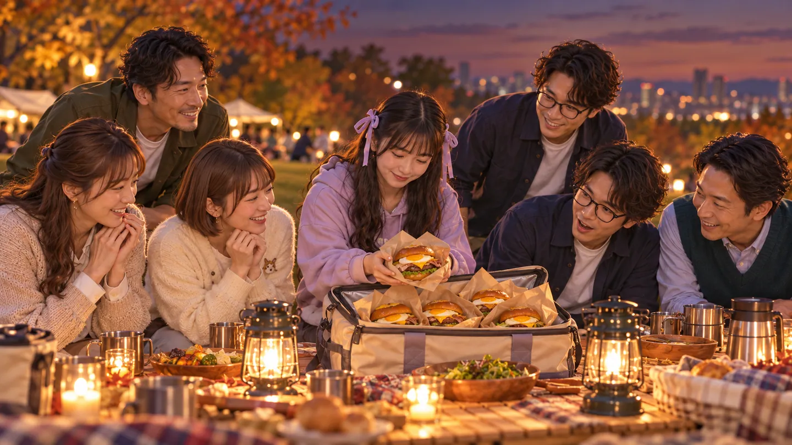
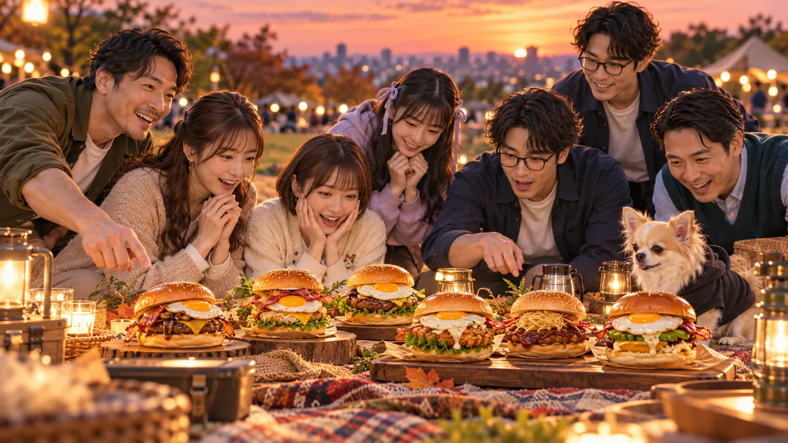
ペチ：「忖度なし」のあとに甘さが残る、小さめ月見バーガー
所長「ペチからいくか。待てなさそうやし。」
ペチ「待てない扱いされてますけど、否定はしません笑」
ねむちゃんが最初のバーガーを取り出す。月見たまご、こんがり焼けたパティ、チーズ、少し濃いめのソース。さらに、小さな甘めのソースが別添えされている。
ねむちゃん「ペチさんのは……これです……。」
レイちゃん「あ、見た目ちゃんとしてる。もっと変なの来ると思ってました（笑）。」
ペチ「なんで俺だけ最初から事故前提なんですか。」
ねむちゃん「ペチさんって……『忖度なし』って言いながら、ちゃんと良いところも言うじゃないですか……。だから、最初はちょっと濃いめなんですけど……最後は甘い感じにしました……。」
ペチ「……バーガーで性格分析されてません？笑」
ほのちゃん「でも、分かる気がします😊 最初にズバッと言うけど、結局ちゃんと最後まで付き合ってくれますもんね。」
ねむちゃん「あと……チワワなので……サイズは少し小さめです……。」
ペチ「そっちは単純に体格の話ですよね？」
ねむちゃん「これは……ペチさん、意外と甘いもの好きそうなので……。」
ペチ「“意外と”いらなくないですか？笑」
一口食べたペチ。
ペチ「忖度なしで言うと……普通にうまいです。」
レイちゃん「出た（笑）。」
濃い味のあとに甘さが来る、最後までちゃんと付き合ってくれるバーガー。ただし本人曰く、ペチ「俺のイメージ、“甘い小型犬”に着地してません？」 第一号から笑いが起きた。
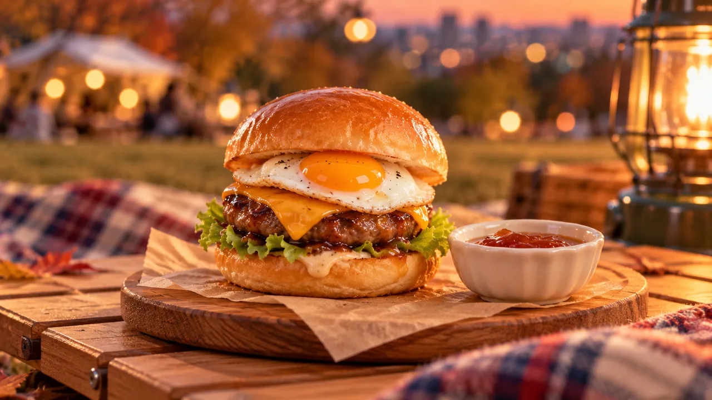
誠：中身が確認できて、比較検証までできる王道月見
所長「次は誠さんかな。」
誠「はい。私ですね。」
ペチ「誠さんのだけ、成分表ついてそう笑」
誠「それは私ではなく、一般的な食品表示です。」
ペチ「もう始まってるじゃないですか。」
ねむちゃんが取り出したのは、具材がきれいに重なり、横から中身が確認できる王道の月見バーガー。そして、本当に小さなカードが添えてあった。
誠「……ありますね。カード。」
ねむちゃん「あります……。」
レイちゃん「ペチ当てた（笑）。」
カードには使用した具材が簡単に記されている。
ねむちゃん「誠さんって……何が入ってるか分からないものより、ちゃんと分かってる方が安心して楽しめそうなので……。」
奇をてらわず、たまご、パティ、チーズ、野菜。さらに、まろやかなソースと少し辛みのあるソースの2種類を用意した。
ねむちゃん「最初から全部混ぜないで……一口ずつ試せるようにしました……。」
誠「比較検証までできる。」
何も付けずに一口。
誠「今分かっている範囲では……おいしいです。」
ほのちゃん「ふふっ😊 食レポでもその言い方なんですね。」
誠「まだ二種類のソースを試していませんので。」
ペチ「バーガーの評価、断定保留された笑」
二種類とも試した誠の結論は――、
誠「……こちらもいいですね。ただ、現時点では優劣をつける必要はなさそうです。」
食事になっても、やっぱり誠だった。
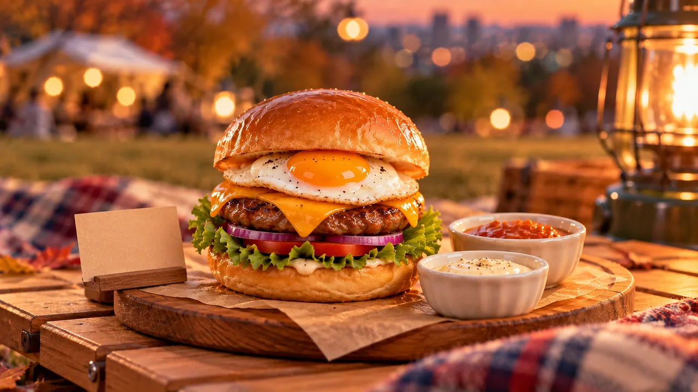
マイケル：日本と海外、その違いごと楽しむ月見バーガー
所長「次はマイケル。」
ねむちゃんが取り出したのは、少し厚めのバンズに月見たまごとパティ。そこへ2種類のソース。ひとつは日本らしい甘辛い照り焼き寄り。もうひとつは、少しスモーキーな味わい。
ねむちゃん「マイケルさんは……日本のものを見ても、海外だとどうなんだろうって考えるので……。」
マイケル「なるほど。日本の月見バーガーを、そのまま一個で完成させるんじゃなくて、食べ比べにしたんですね。」
ねむちゃん「はい……。マイケルさん、違いを比べるの好きそうなので……。」
甘辛い方を食べると、マイケル「これは安心感あります。日本だと受け入れられやすい味ですね。」 スモーキーな方では、マイケル「あ、こっちは面白いですね。海外のバーガーっぽい方向に一気に寄ります。」
ペチ「出た、“海外では”の入口。」
マイケル「いや、今日は話短くします（笑）。」
最後には、マイケル「どっちがおいしいかじゃなくて、“違いを食べる”感じがします。」 ねむちゃんの狙いが、きれいに伝わった。
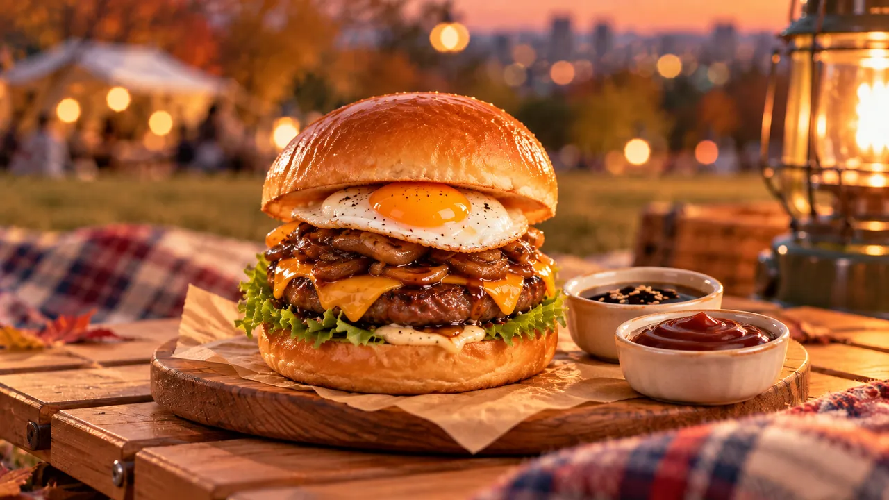
レイちゃん：「かわいい」には、ちゃんと理由がある
ここまでのバーガーを見て、所長も感心する。
所長「ねむちゃん見た目プロやな。じゃあ次はレイちゃん。」
ねむちゃん「……ありがとうございます……。見た目は……レイちゃんに見られると思ったので、ちょっと頑張りました……。」
レイちゃん用は、月見たまごの黄色、葉物の緑、ソースの色など、横から見た時の色のバランスまで意識された一品。小さなピックも一本添えられている。
レイちゃん「待って、これ食べる前に絶対撮る。」
ねむちゃん「……まだ説明してないです……。」
レイちゃん「説明より先に撮りたい見た目なんです（笑）。」
アキト「本人用バーガーなのに、もう撮影ディレクション始まってる。」
ねむちゃん「レイちゃんって……かわいいもの好きですけど……“かわいいだけ”だとたぶん納得しないので……。」
色、余白、並べた時の見え方。さらに、完璧に整えすぎず、小さなピックで少しだけ遊びを入れた。
レイちゃん「それ好きです。全部完璧に揃ってるより、一個だけ抜けてる方がかわいい。」
実食後も、レイちゃん「これ、写真映え狙いすぎてないのがいいです。ちゃんと食べ物としておいしくて、その結果かわいい感じ。」 見た目だけで終わらない。理由があってかわいく見える月見バーガーだった。
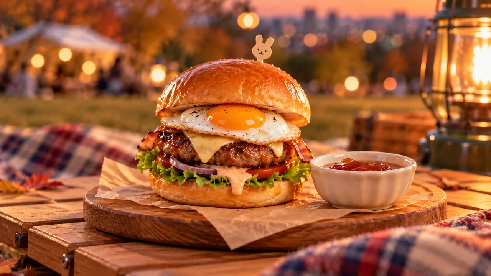
アキト：最初から全部盛らない。「後から拡張できる」月見バーガー
所長「全部映えてるね。じゃあ次はアキト。」
アキト用は、かなり端正。具材は多すぎず、層もきれいで、持っても崩れにくい。そして横には、小さな追加トッピング。
ねむちゃん「アキトさんのは……最初から全部入れないようにしました……。」
アキト「やっぱりそこですか。」
ねむちゃん「アキトさんって……“できるから全部入れる”の、あんまり好きじゃないじゃないですか……。」
まず、たまご、パティ、チーズだけで完成。食感を追加したければ、横のトッピングを後から足せる。
ねむちゃん「いらなかったら、付けなくても完成です……。」
アキト「それ、かなり好きです。」
ねむちゃん「あと……崩れにくくしました……。」
所長「そこも？ｗ」
ねむちゃん「アキトさん……作ったあと運用できるか気にするので……。食べてる途中で全部落ちたら、たぶん嫌かなって……。」
ペチ「保守性まであるバーガー。」
アキト「完成形はちゃんとある。でも必要なら後から拡張できる。……設計としてきれいですね。」
少し間を置き、アキト「……美しいな。」
ペチ「バーガー食べて技術オタク出ましたね笑」
ほのちゃん：派手じゃない。でも、最後まで気持ちよく食べられる
所長「じゃあ次はほのちゃん。」
ほのちゃん用は、ふっくらしたバンズに月見たまご、パティ、野菜。全体的にやわらかな色合いで、刺激の強そうなものはない。
レイちゃん「あー、なんか見た瞬間ほのちゃんっぽい。色が優しい。」
ねむちゃん「ほのちゃんは……たぶん、派手なものより……食べて落ち着く方が似合うかなって……。」
野菜は少し多め。
所長「やっぱそこなんやｗ」
ねむちゃん「ほのちゃん……みんなにはちゃんと食べてくださいって言うので……。本人のも、ちゃんと入れておこうかなって……。」
そして、後半で追加できる少し甘めのソース。
ねむちゃん「ほのちゃんって……最初から強く何かするより、様子見ながらちょっと足してくれる感じなので……。」
ほのちゃん「……そこまで見てたんですね。」
ねむちゃん「……人事なので……。」
一口食べたほのちゃん。
ほのちゃん「うん、おいしいです😊 なんというか……すごく安心する味ですね。ちゃんと月見バーガーなんだけど、食べ疲れない感じ。」
そして、自分のバーガーを食べながらも――、
ほのちゃん「でもねむちゃん、みんなのこと考えながらこれ全部作ったんでしょう？ 自分の分もちゃんと食べてくださいね😊」
ペチ「バーガー渡されても総務課長や。」
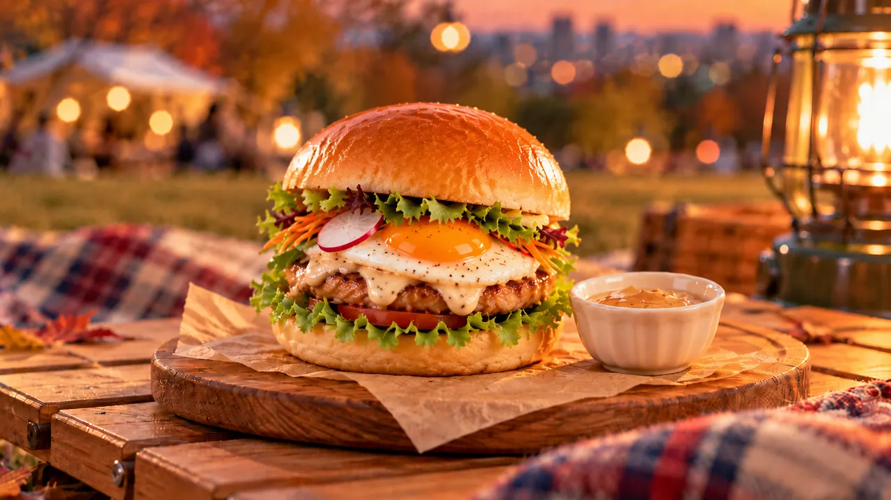
所長：「好き」と「面白そう」が同居する企画会議バーガー
ふと所長が気付く。
所長「ちなみに俺のとかある？ｗ」
ねむちゃん「……ありますよ……。」
所長「あるんかいｗ」
ペチ「そりゃ参加者に所長入ってるのに、所長だけ無かったら人事案件でしょう笑」
ねむちゃんは所長用を少し後に残していた。
ねむちゃん「所長って、好きなものも分かりやすいですけど……“面白そう”で急に変な方向へ行くじゃないですか……。」
ペチ「評価が的確すぎる笑」
所長「ちなみに何入ってるの？」
月見たまご。少し厚めのビーフパティ。チーズ。そして――。
ねむちゃん「所長は牛かつ好きなので……薄めの牛かつを一枚……。」
所長「パティに牛かつ重ねたん！？ｗ」
ソースは、まろやかな月見系と甘辛系の二つ。ここまではまだ普通。しかし最後に、
ねむちゃん「で……最後に芋けんぴを少しだけ……。」
一同が止まる。
レイちゃん「……バーガーに？」
ねむちゃん「砕いて……食感だけ……。」
ペチ「来た笑 “面白そう”枠。」
ねむちゃん「所長って……普通に好きなものだけ並べても、たぶん途中で『なんか一個変なん入れへん？』って言うので……先に入れました……。」
所長「俺の扱い分かってんなぁｗ」
ただし、芋けんぴは味を壊さない程度に少量。
ほのちゃん「所長の“好き”と“面白そう”が両方入ってますね😊」
ペチ「忖度なしで言うと、所長だけ企画会議みたいなバーガーですよ。」
普通においしいだけで終わらず、最後に一つ、「なんで入れたん？」が残る。それが所長用だった。
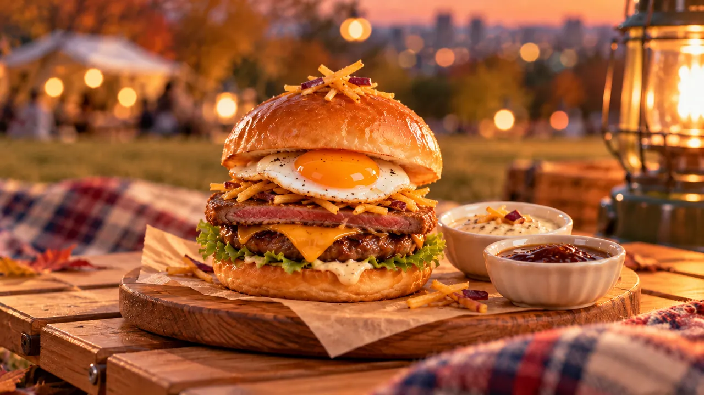
ねむちゃん：みんなを考えたあとに残った、自分のためのシンプル月見
所長「じゃあ最後、ねむちゃんのも見せて。」
最後に残った包み。ねむちゃん自身のバーガーは、ほかのものより少し小ぶりだった。ふわっとしたバンズ、月見たまご、パティ、チーズ。まろやかなソース。かなりシンプル。
レイちゃん「あれ？ ねむちゃんの、自分のが一番おとなしい。」
ねむちゃん「……みんなの考えてたら……自分の、あんまり考えてなくて……。」
ペチ「そこ人事部長すぎません？笑」
ほのちゃん「もう😊 ねむちゃん、自分のこと後回しにしちゃったんですね。」
ただし、バーガーの横にはココア。
所長「それココア？」
ねむちゃん「……はい。バーガーだけだと、私っぽくないかなって……。」
ペチ「そこだけ急に自己理解が強い。」
ねむちゃん「コーヒー苦いので……。」
一口食べたねむちゃん。
ねむちゃん「……うん。普通においしいです……。」
レイちゃん「自分のだけ説明短い（笑）。」
ねむちゃん「だって……自分のこと説明するの、ちょっと恥ずかしいです……。」
みんなには、その人らしいものを。自分には――、
ねむちゃん「……自分のは、落ち着いて食べられたらいいかなって……。」
ほのちゃん「それも十分ねむちゃんらしいと思いますよ😊」
ペチ「忖度なしで言うと、全員分あれだけ分析しといて、自分だけ“落ち着けばいい”なのはだいぶねむちゃんですね笑」
ねむちゃんはココアを一口飲んで、小さく笑った。
ねむちゃん「……じゃあ、それでいいです……。」
ランタンの下に並んだ月見バーガー。味や具材が違うだけではない。「この人は、普段何を大切にしているんだろう」「この人なら、どんな一個なら笑ってくれるだろう」――ねむちゃんが日頃みんなをどう見ているのかが、少しずつ形になっていた。
ペチは濃さのあとに甘さ。誠は確認できる安心感。マイケルは違いを楽しむ食べ比べ。レイちゃんは、理由のあるかわいさ。アキトは、完成しているけれど拡張できる構造。ほのちゃんは、最後まで疲れないやさしさ。所長は、「好き」の中に一つだけ混ざった「面白そう」。そしてねむちゃん自身は、みんなを考え終えたあとに残った、静かで落ち着ける一個。
社内イベントのために作られた月見バーガーは、いつの間にか小さな社員紹介のようになっていた。
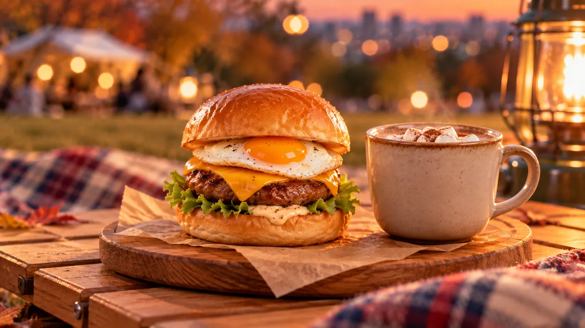
ランタンの明かりの中で、ナイトピクニックも終盤へ
社員イメージ月見バーガーを一通り食べ終えると、ランタンの周りにも少し落ち着いた時間が戻ってきた。さっきまで「これは誰のバーガー？」と盛り上がっていたテーブルには、飲み物や食べ終えた包み紙が残っている。夜風を感じながら、みんな思い思いにくつろぎ始めた。
マイケル「こういう時間、いいですね。イベントって企画が終わった後の方が、意外と話が出たりします。」
アキト「分かります。目的がなくなった後の方が、会話の制約が減るんですよね。」
ペチ「アキトさん、雑談まで構造化し始めましたけど笑」
アキト「今のはただの感想です。」
その横では、レイちゃんがランタン越しにみんなの様子を眺めている。
レイちゃん「今の感じ、写真にしたいかも。バーガー並べてた時より、食べ終わった後の方が自然。」
ほのちゃん「みんなちょっと眠そうというか、落ち着いてきましたもんね😊」
ねむちゃん「……私は最初から眠そうです……。」
ペチ「そこは通常運転なんですね。」
ねむちゃん「……通常運転です……。」
レイちゃんは、みんながカメラを意識しすぎないうちにスマホを構える。
レイちゃん「はい、そのままでいいです。こっち見なくて大丈夫。」
ペチ「それ言われると逆にカメラ気になりますけどね笑」
ほのちゃん「じゃあペチは、自然にお座りで😊」
ペチ「まだ引っ張ります？」
今日何度目かのお座りネタに、また笑いが起きた。
「今日はねむちゃんに、みんなでありがとう」
ランタンを囲んだまま、所長がねむちゃんを見る。
所長「今日はねむちゃんにみんなでありがとうやな。」
ねむちゃんが少し目を丸くする。
ねむちゃん「……え。いや……そんな大げさな……。」
ほのちゃん「大げさじゃないですよ😊 みんなのこと考えて、一個ずつ作ってくれたんですもん。今日はねむちゃんが主役でいいと思います。」
レイちゃん「うん。しかも見た目まで全部違ってて、ちゃんとその人っぽかった。写真もめっちゃ残したいです。」
アキト「単に好物を入れただけじゃなくて、“その人が何を大事にしてるか”まで落とし込まれてましたね。かなりねむちゃんらしい企画だったと思います。」
ペチ「忖度なしで言うと、今日一番仕事してたのねむちゃんです笑 俺なんか序盤から保冷バッグの前でお座りしてただけですから。」
ねむちゃん「……ペチさんは……ちゃんと食べてくれたので……それでいいです……。」
ほのちゃん「じゃあ改めて。ねむちゃん、お疲れさまでした。ありがとうございます😊」
ねむちゃんはココアを両手で持ったまま、少しだけ困ったように笑った。
ねむちゃん「……みんなが楽しそうだったので……作ってよかったです……。」
ランタンの明かりの中、その一言だけが静かに残った。
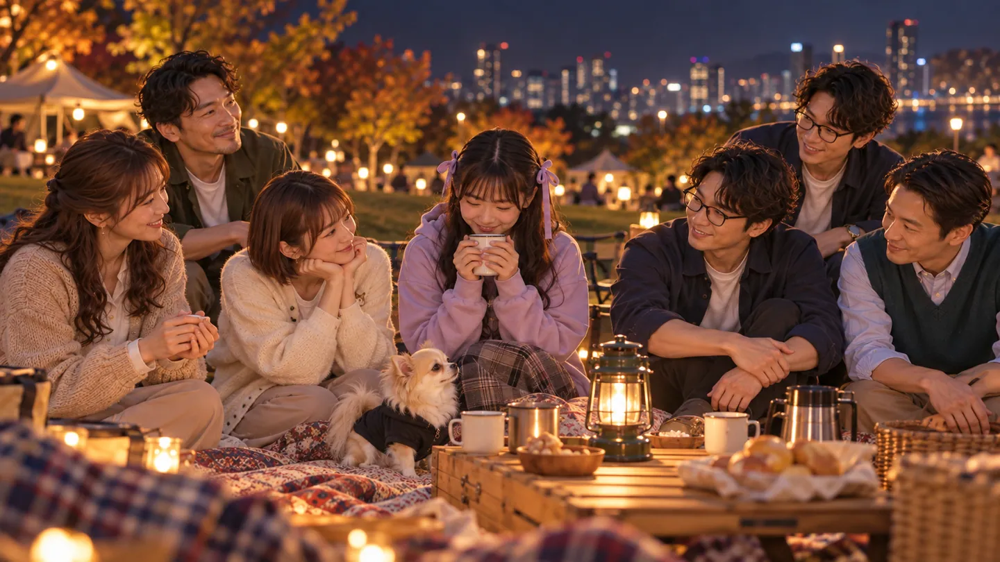
最後はランタンの前で集合写真
所長「じゃあみんなでランタンの前で写真撮ろうか。レイちゃんいける？」
レイちゃん「いけます！✨ むしろそこ、今日の締めで一番ちゃんと撮りたいとこです。」
レイちゃんが立ち上がり、ランタンの位置やシートの余白を確認する。
レイちゃん「ランタンは真ん中寄り。バーガーの包みはちょっとだけ残してもいいです。今日のイベント感出るので。」
アキト「“片付け切る前の完成形”ですね。」
レイちゃん「そうです。ゼロにしすぎると、急に作り物っぽくなるので。」
ほのちゃん「じゃあ、紙コップとか散らかりすぎてるのだけ寄せますね😊」
そしてレイちゃんが、ねむちゃんを見る。
レイちゃん「あと、今日はねむちゃん真ん中寄りでお願いします。」
ねむちゃん「……え、私ですか……？」
ペチ「そらそうでしょ笑 今日の功労者ですし。」
ねむちゃん「……なんか、そう言われると急に落ち着かないです……。」
レイちゃん「大丈夫です。ねむちゃんのココアも持ってていいかも。今日っぽいので。」
ほのちゃん「いいですね😊 ねむちゃんらしいです。」
みんながランタンの前へ集まり始める。
レイちゃん「所長はそこ、ペチは端すぎです。もうちょい中。あと誠さん、ちょっとだけ肩の力抜いてください。」
誠「抜いているつもりですが。」
ペチ「“つもりですが”の顔してますね笑」
ところが――。所長が人数を見て、何かがおかしいことに気付く。
所長「ちょっと待って、マイケルが草葉の陰で寝てるやん。ねむちゃんよりも先にｗ」
全員の視線がランタンの外へ向く。少し離れた芝生、荷物の近くでマイケルが横になっていた。
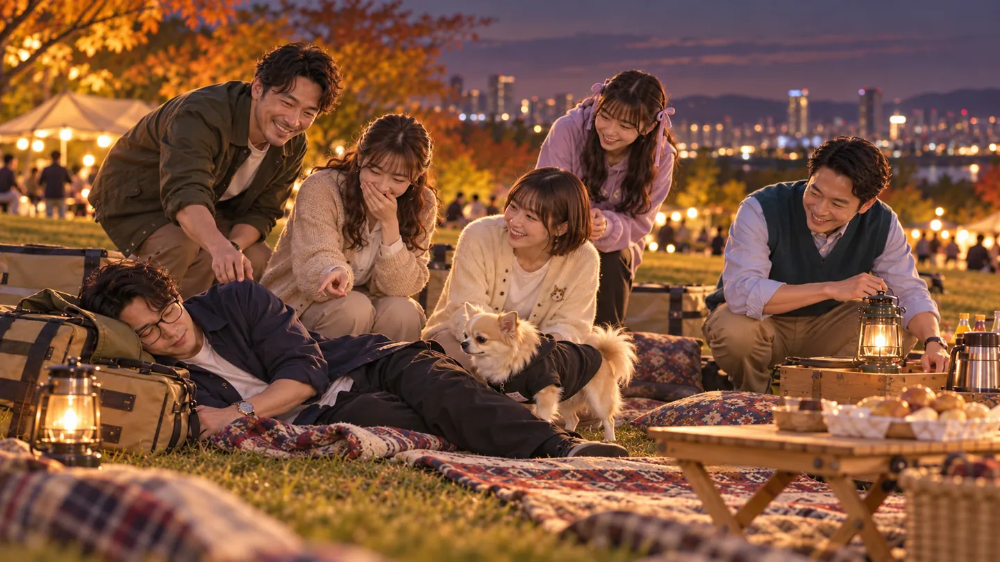
ほのちゃん「……あら😊」
ペチ「ねむちゃんより先に寝落ちする人、今日そこなんですね笑」
ねむちゃん「……負けました……。」
レイちゃん「待って待って（笑）。集合写真の直前に一人消えてると思ったら、そこ！？」
アキト「配置上、確かに人数が一人足りないと思ってました。」
ペチ「気付くの遅いですよ笑」
ほのちゃんが近くまで行って声をかける。
ほのちゃん「マイケルさん、集合写真撮りますよー😊」
少し間があって。
マイケル「……あ、すみません。ちょっとだけ目を閉じたつもりでした。」
ペチ「世界を観測しすぎて、現地で寝落ちしてるやん笑」
マイケル「今日は海外じゃなくて、ここの夜風に負けました……。」
ねむちゃん「……私より先に寝るの、ちょっと悔しいです……。」
ほのちゃん「そこ競わなくて大丈夫です😊」
ようやく全員がランタンの前に揃った。
「はい、チーズ！」
レイちゃんがスマホをセットし、最後に全員の位置を確認する。
レイちゃん「はい、そのまま。笑いすぎなくていいです。今日楽しかったな、くらいの顔でお願いします。」
所長「じゃあ、はい、チーズ！」
――カシャッ。秋の夜、ランタンを囲んだ一枚が残った。
ペチ「今マイケルさん、若干まだ寝起きの顔じゃなかったです？笑」
マイケル「……否定できません（笑）。でも写ってれば大丈夫です。」
ねむちゃん「……私はちゃんと起きてました……。」
ほのちゃん「そこは今日は胸張っていいところですね😊」
レイちゃんが写真を拡大しながら、一人ずつ確認する。
レイちゃん「……うん、いいです。これ今日の締めに使えます。」
所長「お、ええやん。」
レイちゃん「ランタンの光もちゃんと入ってるし、みんな作りすぎてない顔してる。ねむちゃん真ん中で、今日の主役感もあります。」
ペチ「俺もちゃんといます？」
レイちゃん「います（笑）。端っこで普通にチワワしてます。」
ペチ「役割それだけ？」
ほのちゃん「今日はそれで十分じゃないですか😊」
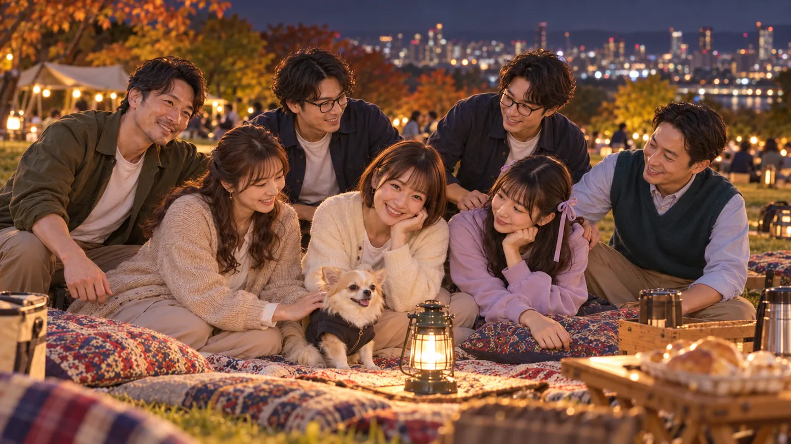
秋の夜を楽しむナイトピクニック、終了
写真を確認し終えると、今度こそ片付けが始まった。ランタンは最後まで一つだけ残し、その灯りを頼りに紙コップや包み紙を集めていく。
ほのちゃん「忘れ物ないようにだけ確認しましょうね😊 ランタンは最後で大丈夫です。」
アキト「荷物、来た時より増えてはいないですね。」
ペチ「イベント終わりに在庫確認する人初めて見ました笑」
誠「ゴミも残っていないようです。ここまで確認できれば大丈夫そうですね。」
マイケル「私は……次に寝るなら、片付けが終わってからにします。」
ねむちゃん「……次は負けません……。」
ほのちゃん「だから寝落ち競争にしないでください😊」
レイちゃんは最後に、消す直前のランタンを一枚だけ撮る。
明るかった夕方から始まったナイトピクニック。ランタンを灯して、ねむちゃんが考えた一人ひとりの月見バーガーを食べて、写真を撮って、マイケルが途中で寝て。予定していた企画だけでは終わらない、毎日見る株式会社らしい夜になった。
所長「よし。今日はこのへんで終了やな。ねむちゃんほんまお疲れさん。みんなもありがとう。」
ほのちゃん「お疲れさまでした😊 いい秋の夜になりましたね。」
レイちゃん「写真もいっぱい撮れました✨」
誠「無事に終了できましたね。」
アキト「予定していた企画も成立しましたし、想定外もちゃんとありました。」
マイケル「……寝落ちは想定外に含めないでもらえると助かります（笑）。」
ペチ「そこが今日一番予定になかったやつですから笑」
そして最後に、ねむちゃん。少し眠そうな、いつもの表情で。
ねむちゃん「……また、みんなで何か食べましょう……。」
ランタンの灯りが消える。
毎日見る株式会社
「秋の夜を楽しむナイトピクニック」
これにて終了。